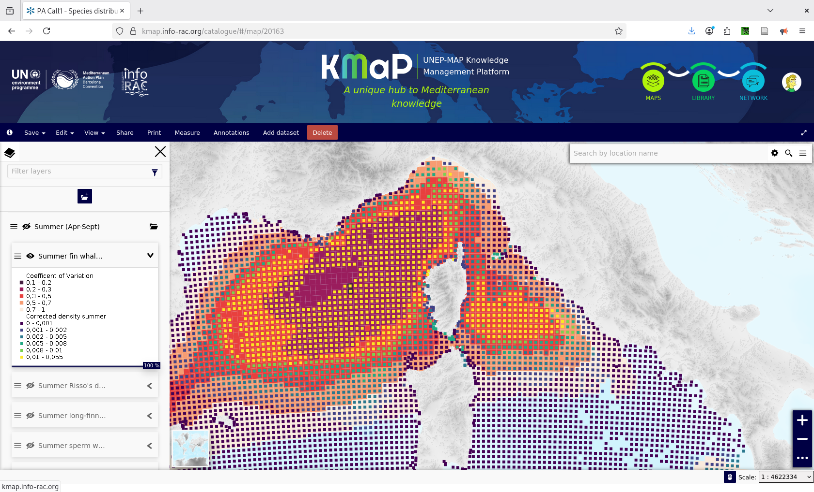

KMaP – Knowledge Management Platform¶
User Documentation for the Pelagos Agreement Group
Note
This manual is dedicated to Kmap users that are also members of the Pelagos Agreement group Some features described here may appear diffferently or not be visible to users outside this group.
Following The Permanent Secretariat of the Pelagos Agreementahs signed a Memorandun of Understanding in 2024 to publish the results of scientific calls conmsisting in maps and geospatial data onto the UNEP-MAP Knowledge Management Platform (KMaP) managed by INFO/RAC; The KMaP platform is accessible at: https://kmap.info-rac.org
This manual describe how to access and visualize data, metadata and maps in the KMaP platform
